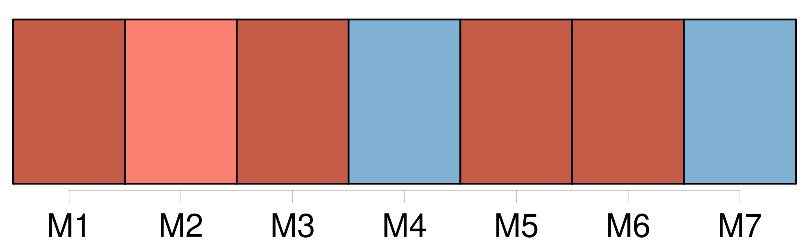
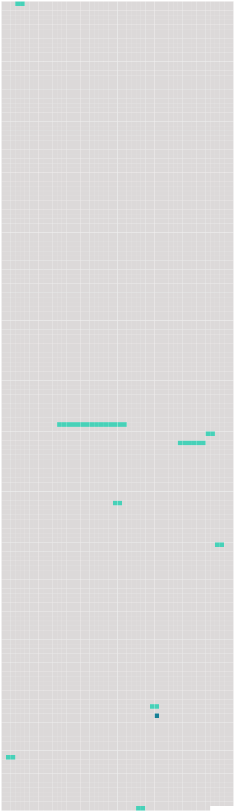

Longueur nb maillons : 10 mentions |
 |
Préféré rester dans [ma chambre] à tous les amusements du dehors. [192 phrases] Après, on nous a montré la porte par où nous devions entrer : n ° 6 ; un escalier de pierre, vingt marches roides à monter ; [une grande chambre voûtée, très haute, aussi haute que le plafond de Saint-Paul] ; le pavé en briques ; les murailles toutes nues. [4 phrases] J'ai découvert auprès de [notre chambre] un petit réduit, où j'ai été m'agenouiller un instant. [3 phrases]
elle ne fut pas longue à trouver un bout de corde qui avait lié une de nos caisses, et elle s'est mise à sauter ; le froid nous faisait grelotter sur ce pavé de briques, dans [cette grande chambre aux murailles nues] [27 phrases] On venait de tirer les verrous de notre porte ; le pauvre Filippo, dans sa peur d'approcher de trop près, avait déposé une jatte de lait pour nous, sur le seuil de [notre chambre] [21 phrases] Maintenant, qu'il est entré dans [notre chambre] et qu'il a touché ce que nous avons touché, il est devenu pour eux tous un objet de terreur. [76 phrases] » — Notre commandant est venu cet après-midi, et voyant le pauvre William dans un violent accès de fièvre, il s'est : écrié : « Dans [cette chambre] , que de souffrances j'ai vues déjà!! [2 phrases] Ces petits carrés de papier que vous voyez collés sur les portes, marquent combien de jours les personnes qui s' [y] sont succédé y ont passés. [15 phrases] William, avec une couverture sur ses épaules, se traîne vers le feu de notre vieux serviteur ; Anna saute à la corde, et Mme Élisabeth fait cinq ou six fois de suite le tour de [la chambre] , en sautant sur un pied. [26 phrases] Depuis le jour où nous sommes arrivés, j'ai remarqué qu'un des gardiens de [notre chambre] a toujours un air de tristesse et de sympathie quand il nous regarde. |
 |
Il est possible de télécharger la ressource sur la page Ortolang |
Si vous avez des questions ou vous voyez des erreurs, merci d'envoyer un mail à silvia.federzoni89@gmail.com |